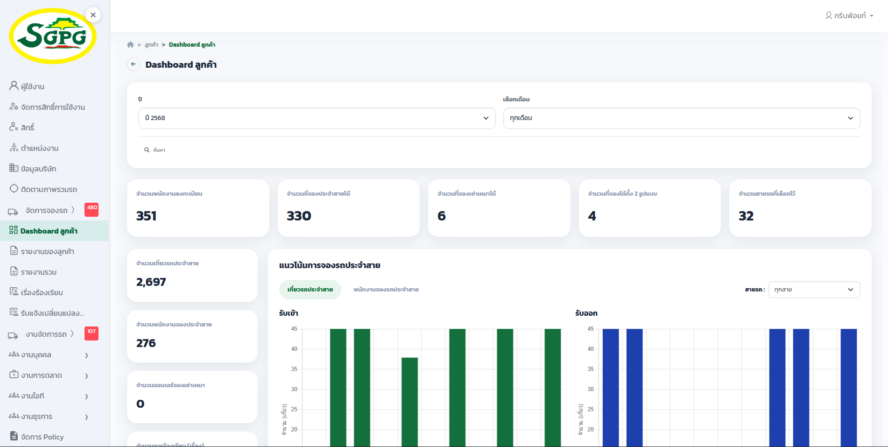
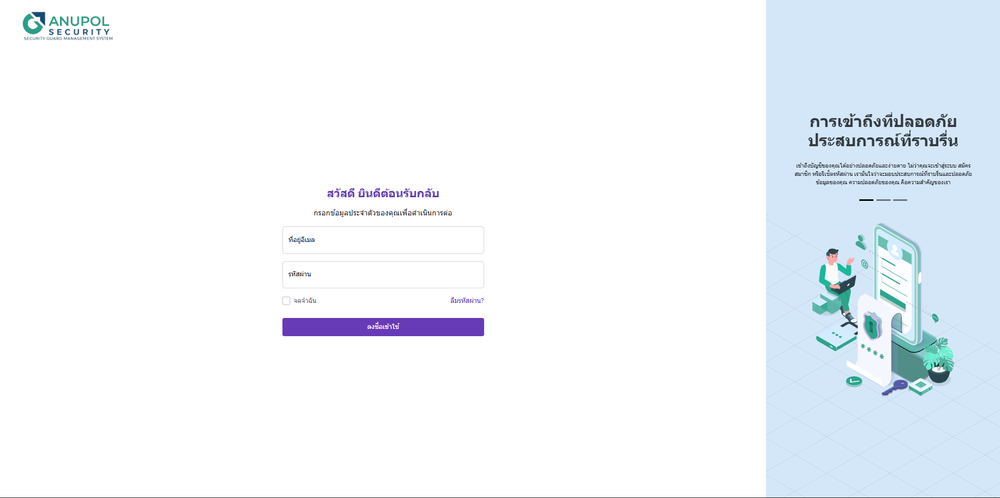
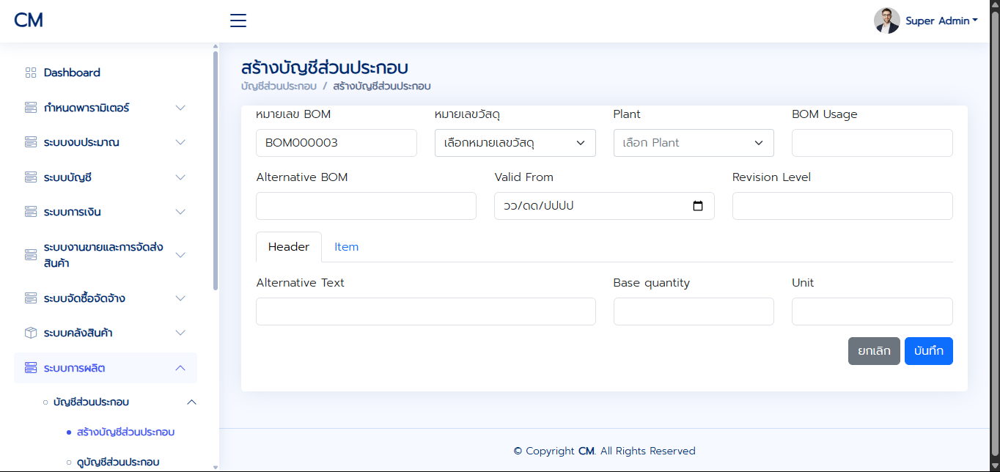
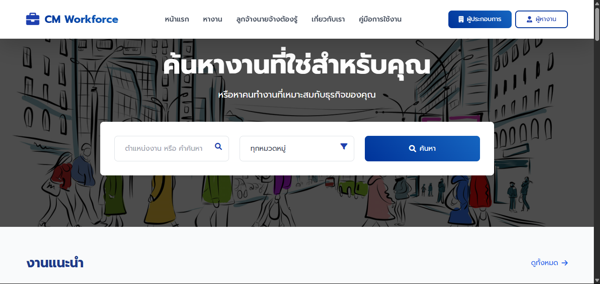

AI & LLM Engineering NEW
LLM · RAG · AI Agents · Vector Search · Embeddings
↗นักพัฒนา Full Stack ที่ผสาน AI เข้ากับซอฟต์แวร์ เพื่อเปลี่ยน Workflow ซับซ้อนให้เป็น ระบบอัจฉริยะที่เรียบง่ายและเชื่อถือได้
วัชรพงศ์ คงจันทร์
AI Full Stack Engineer
ผมเป็นนักพัฒนาที่ทำงานอยู่ระหว่าง
ปัจจุบันเป็น AI Full Stack Engineer ดูแลระบบตั้งแต่ Frontend ถึง Backend API และพัฒนาฟีเจอร์ AI อย่าง RAG, AI Agent และ Vector Search ให้ใช้งานได้จริงในธุรกิจ
มีพื้นฐานระบบองค์กรจาก K2 Workflow, Laravel, PHP, SQL และ SAP ABAP ทำให้เข้าใจทั้งกระบวนการทำงานและการนำ AI ไปเชื่อมกับระบบเดิมอย่างเสถียร
ร่วมงานกันLLM · RAG · AI Agents · Vector Search · Embeddings
↗Frontend · Backend APIs · Laravel · PHP · JavaScript · Docker
↗K2 Five · SmartForms · SmartObjects · Business Rules
↗REST API · Web Services · SQL Server · MySQL · SharePoint
↗SAP ABAP · Report · Interface · Smart Form · ERP
↗จากงานเอกสาร สู่ Web Application, Workflow ระดับองค์กร และระบบ AI ที่ใช้งานได้จริง
Khoomkha Center Co., Ltd.
ผสานการพัฒนาซอฟต์แวร์ Full-Stack เข้ากับเทคโนโลยี AI/LLM โดยออกแบบให้ตอบโจทย์ทั้งผู้ใช้และธุรกิจ
I Design Solutions Co., Ltd.
พัฒนา SmartForms, Views และ Workflows บน K2 Five / Blackpearl พร้อมเชื่อมต่อระบบภายนอกและดูแลระบบ Production
Musion Co., Ltd.
ออกแบบและพัฒนา Web Application ตามความต้องการของลูกค้า จากแบบ Figma ด้วย Laravel และ MySQL
Cloudmate Co., Ltd.
พัฒนาเว็บไซต์และโปรแกรมด้วย PHP, SQL และ WordPress ควบคู่กับงาน SAP ABAP
วิทยาลัยเทคนิคตรัง
งานด้านเอกสาร เช่น บันทึกข้อความ คำสั่ง โครงการ และเอกสารราชการต่าง ๆ
คลิกที่ผลงานเพื่ออ่าน Case Study และดูภาพเพิ่มเติม

VIEW PROJECT ↗4 SCREENSระบบจัดการรถบัส บุคลากร การตลาด ตารางเดินรถ และรายงาน
รวมข้อมูลการดำเนินงานไว้ในระบบเดียว ช่วยให้ติดตามภาพรวมและจัดทำรายงานได้ง่ายขึ้น

VIEW PROJECT ↗5 SCREENSระบบจัดการเจ้าหน้าที่ ตารางเวร จุดตรวจ และรายงานเหตุการณ์
ข้อมูลเวรและเหตุการณ์ค้นหาได้เป็นระบบ เพิ่มความสะดวกในการติดตามและตรวจสอบย้อนหลัง

VIEW PROJECT ↗6 SCREENSระบบบริหารการผลิต บัญชีส่วนประกอบ และคลังสินค้า
เชื่อมโยง BOM การผลิต และคลังสินค้า ทำให้ข้อมูลในแต่ละขั้นตอนต่อเนื่องกันมากขึ้น

VIEW PROJECT ↗5 SCREENSแพลตฟอร์มหางาน สมัครงาน อัปโหลดเอกสาร และจัดการโปรไฟล์
ผู้สมัครและผู้ประกอบการจัดการประกาศ โปรไฟล์ และใบสมัครผ่านช่องทางเดียว
เปลี่ยนกระบวนการอนุมัติที่มีหลายขั้นตอนและข้อมูลกระจาย ให้เป็น Workflow กลางที่ผู้ใช้ติดตามสถานะได้
ข้อมูลจากแบบฟอร์ม ผู้อนุมัติ และสถานะงานอยู่คนละจุด ทำให้ติดตามงานและตรวจสอบย้อนหลังได้ยาก
พัฒนา SmartForms, Views, Rules, Validation, Workflow และ SmartObjects ตาม Requirement ที่ได้รับ
เชื่อมข้อมูลกับ SQL Server, REST API, Web Services หรือ SharePoint ตามบริบทของระบบ
ทำ Unit Testing แก้ไขปัญหาจาก UAT จัดทำ Deployment Document และ User Manual
ทุกช่วงการทำงานช่วยต่อยอดทักษะ จากการดูแลระบบ สู่ Web Development, ERP, Workflow Automation และ AI
ฐานข้อมูล เครือข่าย ซ่อมคอมพิวเตอร์ และพัฒนาแอปพลิเคชัน
เว็บไซต์ PHP / WordPress ระบบ ERP และ SAP ABAP Report, Interface, API
Web Application ตามแบบ Figma ด้วย Laravel, MySQL, Docker และ GitLab
Workflow, SmartForms, SmartObjects และการเชื่อมต่อระบบองค์กร
RAG, AI Agent และ Vector Search บนระบบ Full-Stack ที่พร้อมขยาย
รับพัฒนางานตามขอบเขตที่ชัดเจน ตั้งแต่การวิเคราะห์ไปจนถึงส่งมอบและดูแลหลังใช้งาน
ผู้ช่วย AI ที่ตอบจากข้อมูลของธุรกิจด้วย RAG, AI Agent ที่ช่วยทำงานซ้ำ ๆ และระบบค้นหาเชิงความหมาย
LLM · RAG · AI Agent · Vector Searchระบบหลังบ้าน Dashboard แบบฟอร์ม และระบบจัดการข้อมูลที่ออกแบบตามกระบวนการของธุรกิจ
Laravel · PHP · MySQL · JavaScriptเปลี่ยนขั้นตอนอนุมัติและงานเอกสารให้เป็น Workflow ที่ติดตามสถานะและตรวจสอบย้อนหลังได้
K2 · SmartForms · SmartObjectsเชื่อมต่อข้อมูลระหว่างระบบ ลดการกรอกข้อมูลซ้ำ และทำให้กระบวนการทำงานต่อเนื่องกัน
REST API · SQL Server · Web Servicesตรวจสอบ แก้ไขปัญหา ปรับปรุงระบบ และจัดทำเอกสารเพื่อให้ผู้ใช้ทำงานได้อย่างต่อเนื่อง
UAT · Troubleshooting · Documentationกระบวนการทำงานที่เน้นการสื่อสาร ตรวจสอบได้ และลดความเสี่ยงก่อนนำระบบขึ้นใช้งาน
รวบรวม Requirement ผู้เกี่ยวข้อง ข้อมูล และข้อจำกัดของกระบวนการปัจจุบัน
วาง Flow โครงสร้างข้อมูล หน้าจอ และจุดเชื่อมต่อให้ทุกฝ่ายเห็นภาพตรงกัน
แบ่งงานเป็นส่วนย่อย พัฒนาและสาธิตความคืบหน้าเพื่อรับ Feedback ระหว่างทาง
ทำ Unit Testing รองรับ UAT แก้ไขข้อผิดพลาด และตรวจสอบกรณีใช้งานสำคัญ
Deploy พร้อมเอกสาร User Manual และติดตามปัญหาหลังนำระบบขึ้นใช้งาน
Rajamangala University of Technology Srivijaya
ชนะเลิศอันดับ 1 กลุ่มวิทยาศาสตร์คอมพิวเตอร์และเทคโนโลยี
นำเสนอผลงานด้านวิทยาการคอมพิวเตอร์และเทคโนโลยีสารสนเทศ
รองชนะเลิศอันดับ 4 ระดับชาติ
Workforce Basics ระดับ 2 · คะแนนรับรอง 775
เปิดรับงานที่ได้ใช้ทักษะด้านการพัฒนาระบบและแก้ปัญหาให้ธุรกิจ
HAVE A PROJECT IN MIND?